![Logo de Saulo Pierrout]()
![Foto do perfil @saulopierrout]()
![Foto do perfil @saulomotion]()
Painéis por objetivo
Escolha o que você quer fazer. Cada painel reúne o protocolo, o kit principal, os sites, os cursos e os códigos que servem para aquilo.
Criar um app ou site
Do documento ao produto publicado: planta, design, método, segurança e lançamento.
Kit principal o que usar, em ordem de protocolo
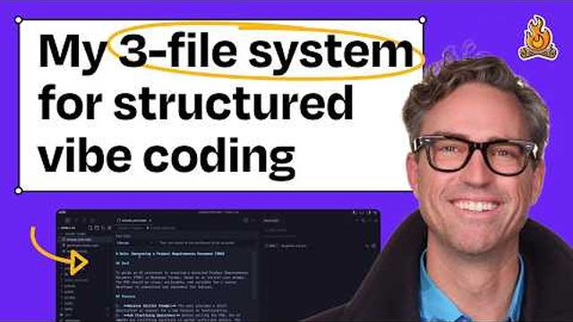
Mais da biblioteca nesta área 76 no total
Sites e cursos com miniatura
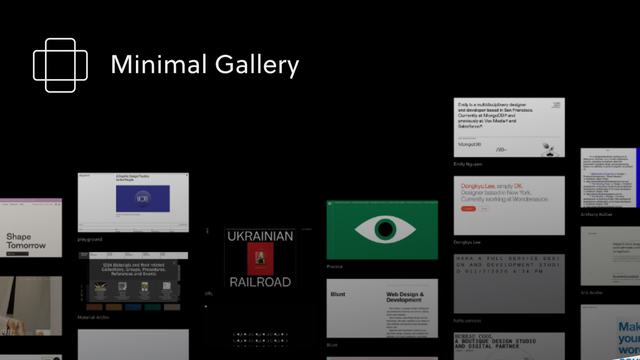
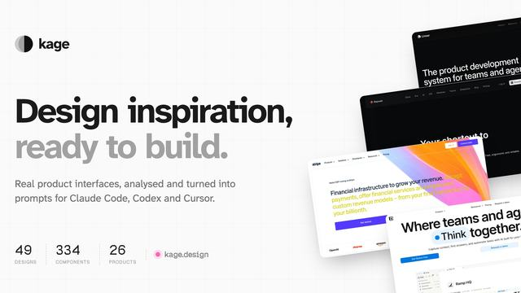
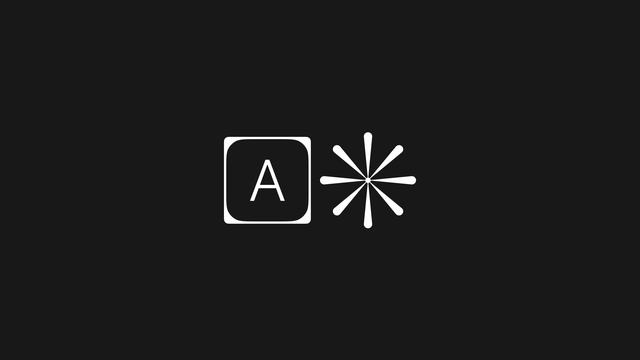
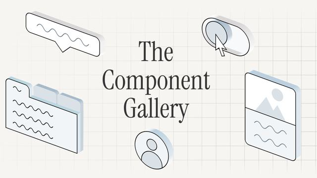
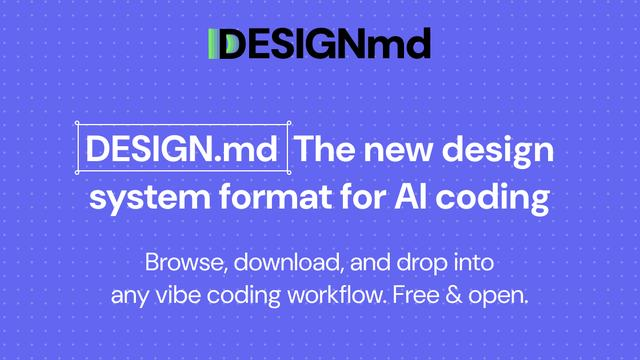
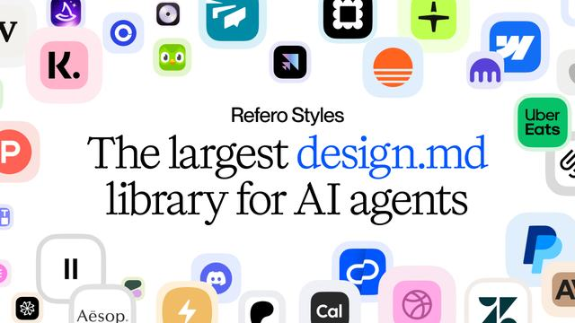
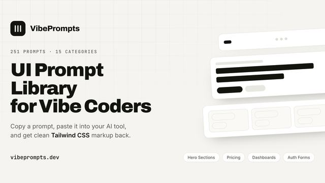
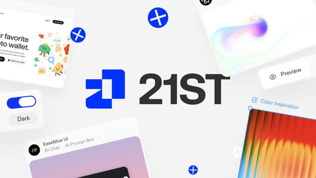
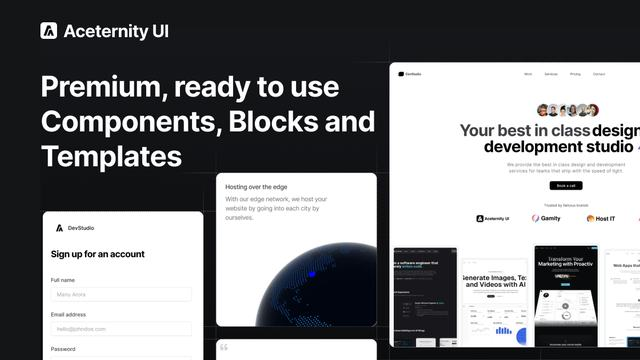
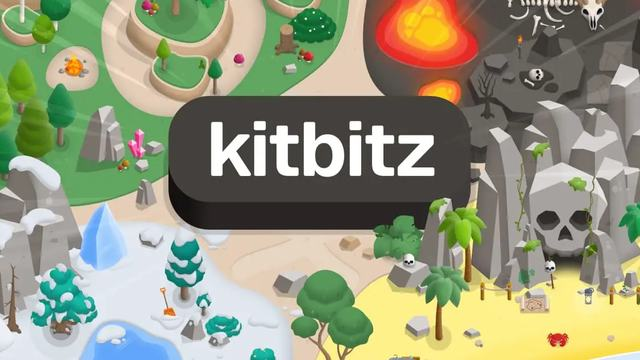
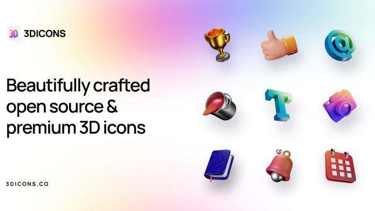
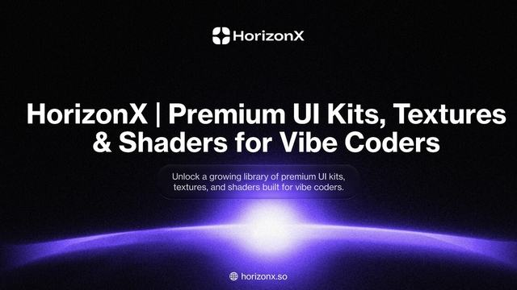
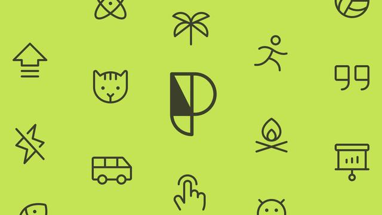
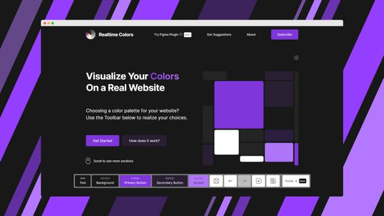
Códigos para copiar com preview
Fazer motion e vídeo
Animação, vídeo por código e por IA, com referências de estilo, filmes e efeitos para pedir.
Referências de animação
Kit principal o que usar, em ordem de protocolo
Mais da biblioteca nesta área 42 no total
Sites e cursos com miniatura
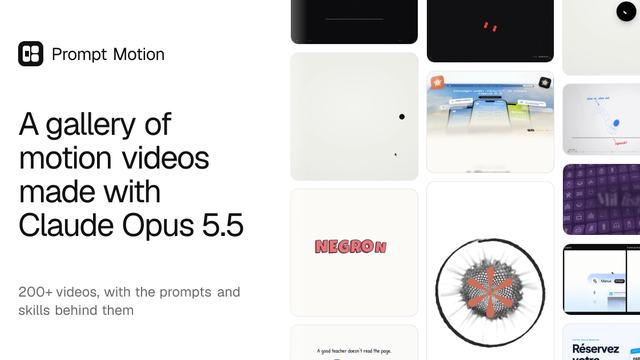
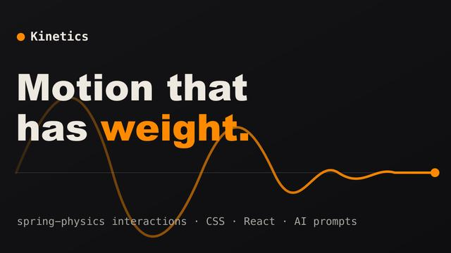
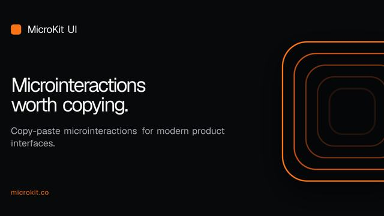
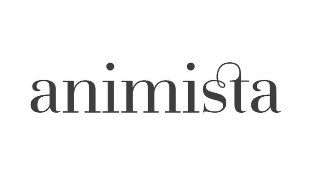
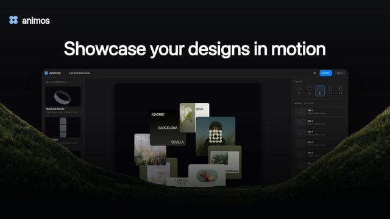
Montar um canal no YouTube
Pauta, roteiro, narração, cenas, montagem, shorts, miniatura e agenda, com você aprovando cada etapa.
Kit principal o que usar, em ordem de protocolo
Criar um jogo
Ideia, personagem de referência, arte e animação, engine, som, teste e publicação.
Kit principal o que usar, em ordem de protocolo
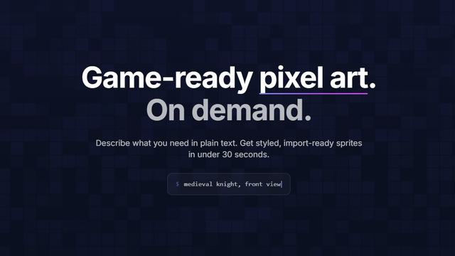
Automatizar e atender
WhatsApp, Instagram, n8n e agentes, testando antes e respeitando as plataformas.
Kit principal o que usar, em ordem de protocolo
Mais da biblioteca nesta área 14 no total
Sites e cursos com miniatura
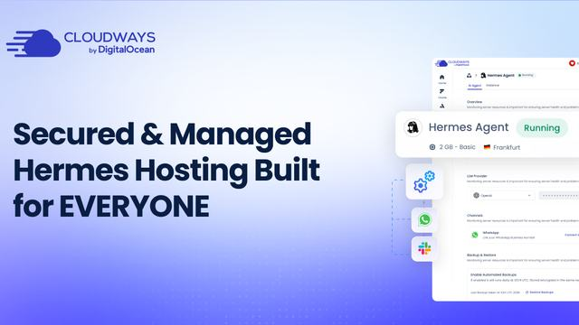
Marketing, SEO e conteúdo
Pesquisa, oferta e copy, SEO, anúncios, redes sociais e medição.
Kit principal o que usar, em ordem de protocolo
Mais da biblioteca nesta área 14 no total
Sites e cursos com miniatura
Dados, finanças e planilhas
Planilhas, painéis e análise financeira com IA, cuidando dos dados sensíveis.
Kit principal o que usar, em ordem de protocolo
Mais da biblioteca nesta área 4 no total
Segurança e conformidade
Proteger código, dados e contas, instalar com cuidado e reduzir risco legal.
Kit principal o que usar, em ordem de protocolo
Mais da biblioteca nesta área 8 no total
Trabalhar melhor com o Claude Code
Configuração, método, memória, custo e modelos para render mais gastando menos token.
Kit principal o que usar, em ordem de protocolo
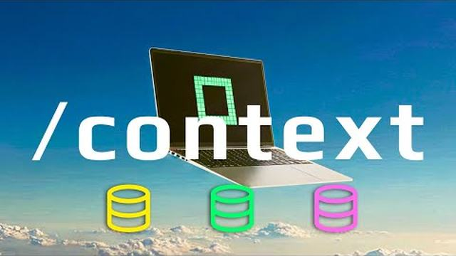
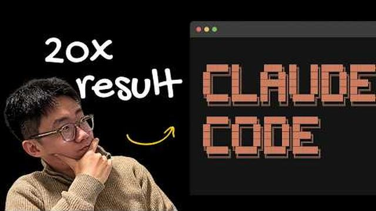
Mais da biblioteca nesta área 74 no total
Sites e cursos com miniatura
Estudar e crescer
Cursos gratuitos, aulas e certificações, com método para transformar estudo em portfólio.
Kit principal o que usar, em ordem de protocolo
Mais da biblioteca nesta área 21 no total
Sites e cursos com miniatura
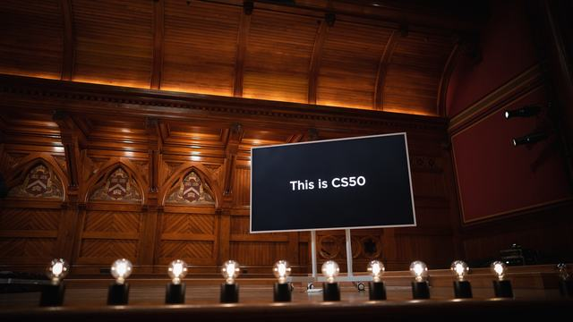

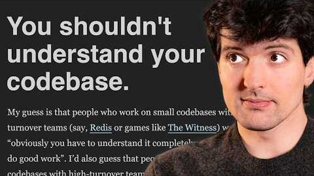